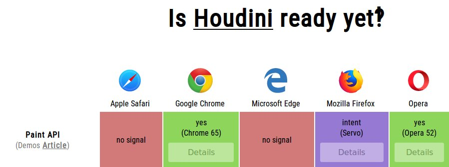
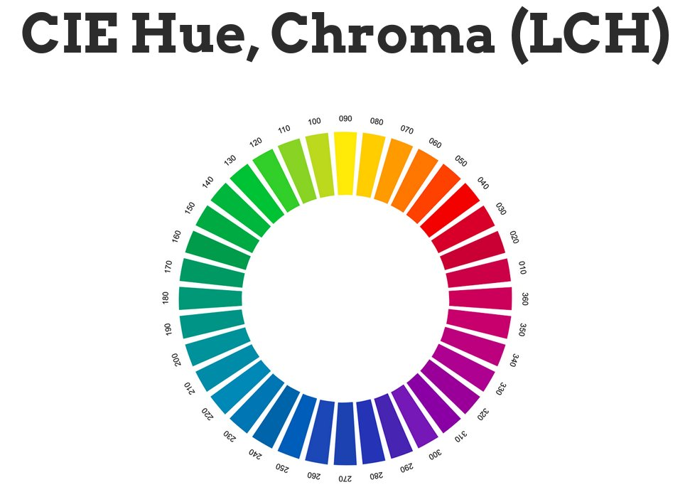

1) Measuring event latency today requires an event listener, which introduces unnecessary performance overhead. The Event Timing #WebPerf #API proposes a simple and efficient mechanism to measure the latency of events triggered by user interaction: https://www.w3.org/2018/07/web-roadmaps/mobile/performance.html#event-timing
The summer edition of the #roadmap of #WebApps on Mobile is out! It highlights exploratory work on how @w3c #Web technologies help optimize performance: https://www.w3.org/2018/07/web-roadmaps/mobile/ #July2018 @tidoust @XueFuqiao @W3CChina https://twitter.com/w3c/status/1026759130680356864
https://twitter.com/w3cdevs/status/10267647550197268484) The @csswg is adopting the overscroll-behavior property proposal, which would help #MobileDevelopers create efficient pull-to-refresh and infinite scrolling paradigms: https://www.w3.org/2018/07/web-roadmaps/mobile/performance.html#css-overscroll-behavior #WebPerf
https://twitter.com/w3cdevs/status/10267647594991984643) Did you know that you can use the #CSS contain property to optimize DOM rendering? Check out: https://www.w3.org/2018/07/web-roadmaps/mobile/performance.html#css-contain #WebPerf
https://twitter.com/w3cdevs/status/10267647581696696332) Looking for a way to run scripted animations without impacting the main thread? The #CSS Animation Worklet #API can help: https://www.w3.org/2018/07/web-roadmaps/mobile/performance.html#animation-worklet #WebPerf
https://twitter.com/w3cdevs/status/1026764756764577793And finally, a brand new and awesome feature: the #implementation status displayed in the #MobileWebApps roadmap uses #MDN Browser Compatibility Data as a source of information, and alerts when an implementation may be partial: https://www.npmjs.com/package/mdn-browser-compat-data @MDN
https://twitter.com/w3cdevs/status/10267647625652797445) The preload attribute gives limited control over setting priorities for resource downloading. The Priority Hints specification proposes a more fine-grained mechanism: https://www.w3.org/2018/07/web-roadmaps/mobile/performance.html#priority-hints #WebPerf
https://twitter.com/w3cdevs/status/1026764761160138752See anything missing? If you know of use cases that cannot be achieved today with #Web #technologies, please start a new topic in the @w3c’s discourse forum https://discourse.wicg.io/ or raise an issue on the GitHub repository of this document https://github.com/w3c/web-roadmaps/issues/new
https://twitter.com/w3cdevs/status/1026764765757095937Reminder of what #CSS #Houdini enables https://twitter.com/w3cdevs/status/983277098705063936
The first #CSS #Houdini specification to reach #CandidateRecommendation: CSS Painting Level 1 https://www.w3.org/TR/2018/CR-css-paint-api-1-20180809/ - this is a major step in the evolution of the extensibility of Web browsers https://twitter.com/w3c/status/1027725494135996417
https://twitter.com/w3cdevs/status/1027861860543016960#CSS Painting ”allows developers to write a paint function which allows to draw directly into an elements background, border, or content” https://github.com/w3c/css-houdini-drafts/blob/master/css-paint-api/EXPLAINER.md
https://twitter.com/w3cdevs/status/1027861863013515264Right now, the API is available only in Chromium-based browsers - hopefully more to come?
https://bugzilla.mozilla.org/show_bug.cgi?id=1302328
https://wpdev.uservoice.com/forums/257854-microsoft-edge-developer/suggestions/18619855-implement-houdini-to-expose-low-level-css-hooks
https://twitter.com/w3cdevs/status/1027861866842935296See for example some cool demo of using this in combination with Three.js by @Lady_Ada_King https://twitter.com/Lady_Ada_King/status/1017067159770599424
https://twitter.com/w3cdevs/status/1027861864934531072See also @svgeesus talk on #CSS Color https://www.w3.org/Talks/2017/css4-color-talk/20years.html
CSS Color 4 proposes two new color schemes: Lab & LCH with the nice property of having constant visual lightness for a given L value https://drafts.csswg.org/css-color/#lab-colors - in github at https://github.com/w3c/csswg-drafts/tree/master/css-color-4 https://twitter.com/LeaVerou/status/1029029640336302080
https://twitter.com/w3cdevs/status/1029040068789497856If you need a quick refresher on the Generic Sensor API: https://twitter.com/w3cdevs/status/956181984681840642
This new Geolocation API is designed to provide similar features to the well-known navigator.geolocation.getCurrentPosition() API but with a model aligned with the Generic Sensor API framework.
For input and contributions, head to the github repo https://github.com/w3c/geolocation-sensor https://twitter.com/kennethrohde/status/1034888901167599617
https://twitter.com/w3cdevs/status/1034893862433644545